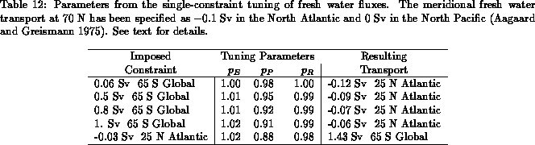

The steady state meridional fresh water transport equation can be written as
where the bar denoting time mean has been omitted.
Integrating this equation from the north we obtain the zonally
integrated meridional fresh water transport
where denotes the northward fresh water transport at
latitude
, and
is the river runoff into the oceans as a
function of latitude. As before, we introduce non-dimensional tuning
parameters for each fresh water transport source term, viz.
where ,
,
denote the evaporation, precipitation and
runoff computed with the current bulk formula parameters. As northern
boundary conditions we use
Sv at 70° N in the North Atlantic and
0 Sv at 70° N in the North Pacific (Baumgartner and Reichel 1975,
Aagaard and Greismann 1975). Annual mean values of runoff are taken
from Baumgartner and Reichel (1975) except for the 5° box adjacent
to the Mediterranean which is modified as follows.
Baumgartner and Reichel's (1975) runoff into the eastern margin of the
Atlantic appears too small to include all the fresh water transport
into the Mediterranean (rivers and the Black Sea), but too large to
take into account the total water transport into the Mediterranean
(including flow from the Atlantic). Therefore, portions of the water
balance were recalculated from various sources. Net transport from
the Black Sea into the Mediterranean is about 200 km
/y and from
the Atlantic into the Mediterranean is approximately 1700 km
/y (Lacombe
and Richez 1981). River runoff into the east coast of the Atlantic
between 35 and 40° N is around 22 km
/y (UNESCO 1969, van der
Leeden 1975). River runoff into the Mediterranean is taken to be
about 139.4 km
/y (UNESCO 1969, van der Leeden 1975, Lacombe and
Richez 1981). When calculating global fresh water transport, then, the
east coast Atlantic runoff value between 35 and 40° N is the sum of
Mediterranean and Atlantic river runoff plus the transport from the
Black Sea: 361.4 km
/y. When calculating transport for the
Atlantic only, the Mediterranean is masked out. The east coast runoff
into the Atlantic in the region, then, is the sum of the Atlantic river
runoff minus the transport from the Atlantic into the Mediterranean:
km
/y.
The parameter error estimates for the fresh water fluxes are taken as follows
The 20%error estimate for evaporation is consistent with the value used
for latent heat flux in the previous section. The larger value for
error in the precipitation parameterization reflects the
great discrepancy among several estimates of oceanic precipitation.
Table 12 shows the results of single-constraint
calculations imposing 0.06 Sv at 65° S (Peixoto and Oort 1992),
Sv at 25° N (Hall and Bryden 1982), and a few others.
Each of the constraints causes an increase
in evaporation
and a decrease in
precipitation and runoff. However, the unconstrained fresh water
fluxes appear to be nearly in balance, as the corrections are quite small.
